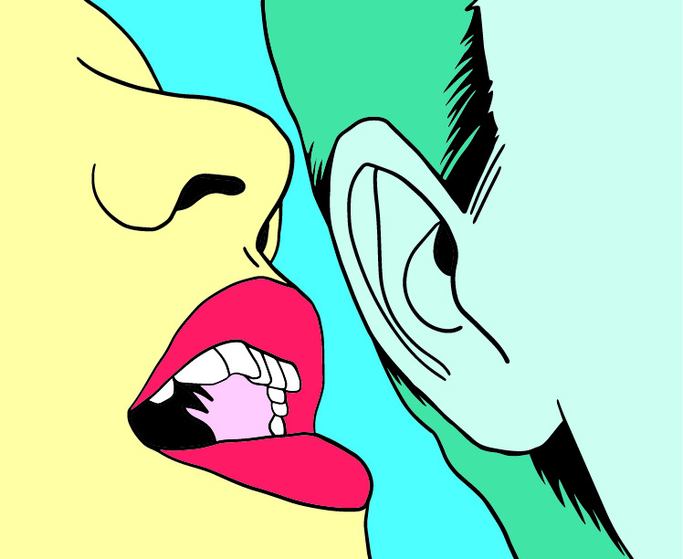
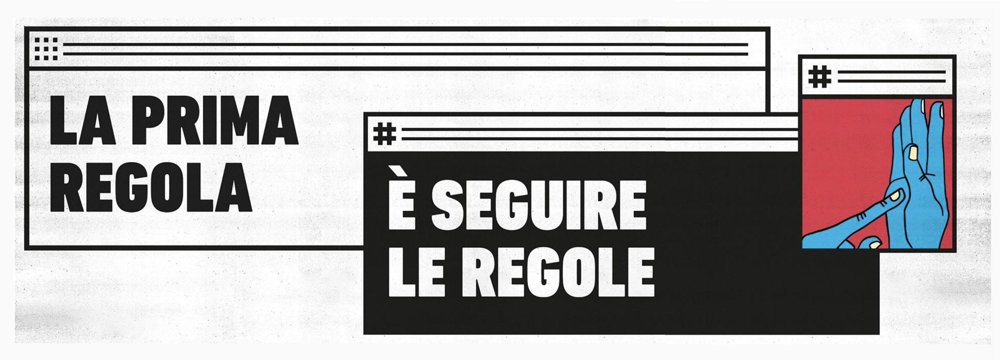
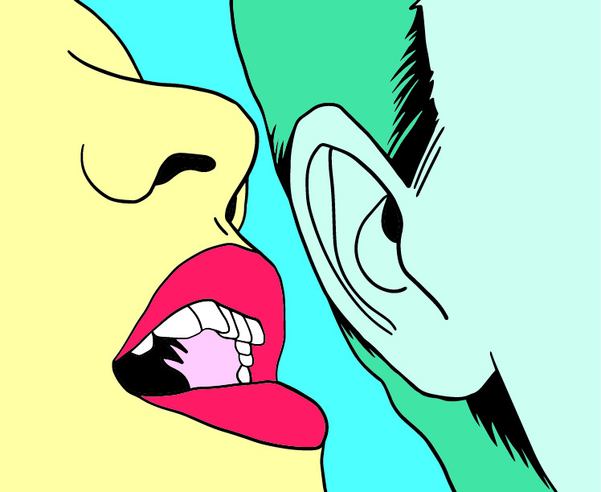
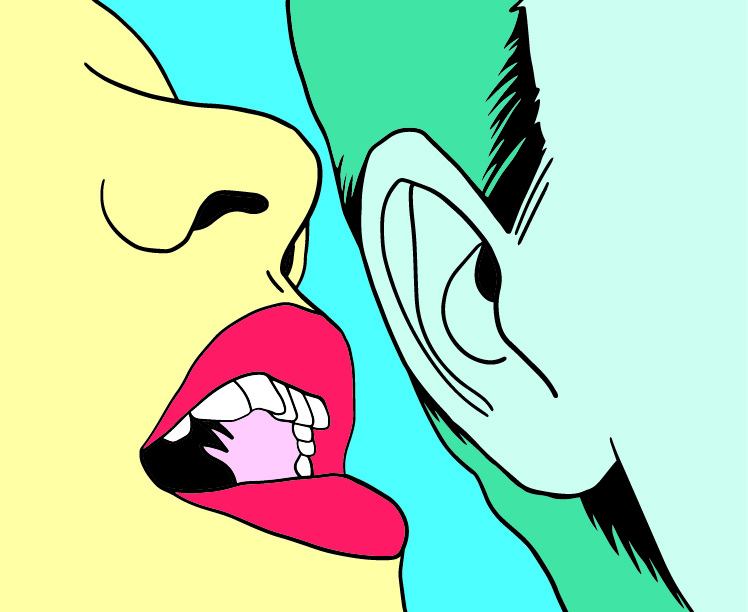
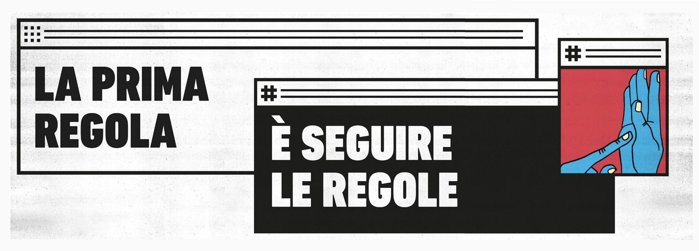
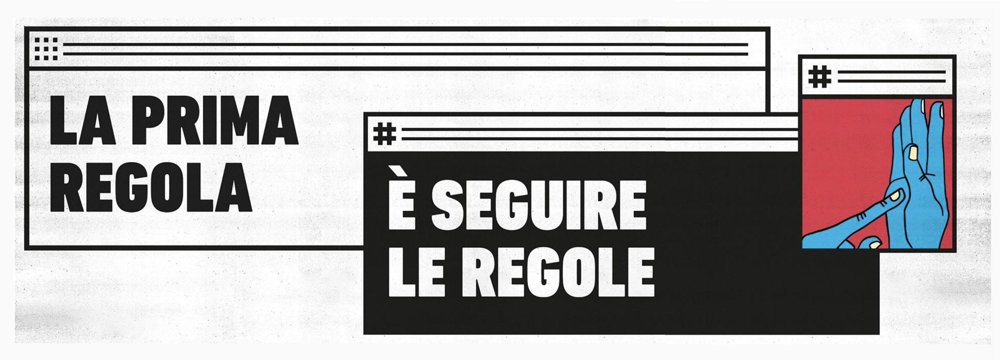

An escape room created for the 30th anniversary of the Fall of the Berlin Wall and hosted by Polo del '900 in Turin and by Triennale Teatro Milano, where the visitors play the role of citizens of a fictional State (inspired by DDR) and have to deal with the paradoxical rules imposed by the institutions.
A project by We Are Müesli ➙. I took part to the art direction and the visual design of the props and the promotional campaign for the escape room.
Designed in 2019 - 2020.
☟
Video by Marco Ligabue
Wer Ist Wer was hosted by Triennale Teatro Milano as Wer Ist Wer Z ➙, a live-streaming escape room experience.


Trailer by Federico Gambarana
This ➙ is the website I designed and coded for the release of the escape room.
 

 
